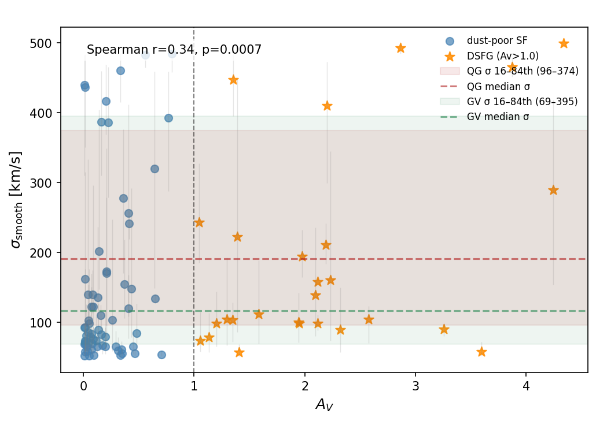

The Evolutionary Connection Between Dusty Star-Forming and Quiescent Galaxies at z = 2–6
Overview
How do massive quiescent galaxies form in the early Universe?
Massive quiescent galaxies are already in place just a few billion years after the Big Bang, but their formation pathways remain poorly understood.
Dusty star-forming galaxies (DSFGs) have long been considered key progenitors, yet the physical connection between these populations is still unclear.
Using JWST spectroscopy, this work explores whether DSFGs truly represent a transitional phase toward quiescence, or a more complex stage in galaxy evolution.
Methods
- Analyzed star formation histories of 249 high-redshift z = 2–6 galaxies using JWST NIRSpec spectroscopy and NIRCam photometry from the DAWN JWST Archive.
- Performed Bayesian SED fitting with Prospector to derive stellar masses, dust attenuation, and star formation rates; validated results against an independent photometric catalog.
- Identified 24 dusty star-forming galaxies (DSFGs)via multi-diagnostic classification (\( A_V \), UVJ diagram, Hα EW) and characterized their dynamical states using stellar velocity dispersion proxy \( \sigma_{\mathrm{smooth}} \).
- Demonstrated that only ~8% of dusty star-forming galaxies (DSFGs) exhibit rapid quenching signatures (\( v_{\mathrm{quench}} > 1.9\,\mathrm{dex\,Gyr^{-1}} \)), only a small subset transitions into quiescent galaxies.
Results
